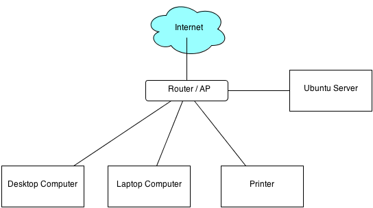
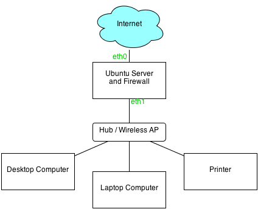

What do you want your server to do? What will it be handling for you on a daily basis? These are important questions to answer before shopping for your server hardware.
|  |  | |
| Network-attached only (no firewall) | Network-routed and firewalled |
Now we get to the fun part - doing some shopping! Load up your favourite computer parts vendor and let's get started.
The most popular server CPUs these days are Intel, hands down. The Sandy Bridge and Ivy Bridge-class processors are really without comparison when it comes to performance and dependability. You can find decent ones for between $250 and $350 that will provide more than enough power for what we are looking to accomplish with our server.
It is also important to remember your CPU's cooling requirements. Most new Intel CPUs come with cheap but decent cooling fans; though if you are looking to improve your server's noise production, it may be a good idea to buy a nicer fan as well. Just make sure the fan is compatible with your chosen CPU's socket type.
Some individuals and companies may consider this heresy, but you really don't need to buy the most expensive RAM out there in order to have a dependable and quick system. If you are spending more than $150 on RAM, you are very likely spending too much. Decent server memory is not too much more than normal memory.
The motherboard is where the entire system comes together. Choosing one depends on the services you wish to offer with this server.
99% of the time, you will want to choose a server motherboard. These boards support server-class CPUs like the Intel Xeon series. Furthermore, most of them come with two Ethernet ports (NICs). This is indispensable for servers that act as routers for internal networks, or servers that will host email/web services. A common setup is to plug the cable/DSL modem into the first NIC as a "front-facing" interface, then to route the internet connection through to the second NIC, which is connected directly to your network hub or wireless access point.
It is possible to get by with a standard motherboard and CPU if you only want to do media sharing on your internal network, but if you are even considering doing more than that, it's best to go for the server motherboard and CPU.
Regardless of the class of motherboard you go with, the most important match you will make is between motherboard and CPU. You MUST remember to pair them by their socket type. For example, socket LGA1155 CPUs might not fit every socket LGA1366 or LGA2011 motherboard, etc.
Also keep RAM (memory) in mind. Motherboards have different types, sockets and speeds for RAM, as well as limits to how much memory they can handle, so make sure you can find one that works with your memory requirements. Your motherboard's manual, usually available in PDF from the manufacturer's website, will have all of this information.
Cases might not seem like an important consideration, but there are two critical elements to be aware of when choosing one to meet your needs.
Again, the type of hard drives you will need will vary depending on what you want to accomplish with them. For simple web/email servers, you will not need much space at all. For those looking to do any sort of file hosting, space will likely be very important. You can pick a certain number of drives that can be matched via a RAID array, which can either:
Drives should also be purchased according to their type and the compatibility with the motherboard. Nearly every motherboard these days supports SATA, the new standard for drive connectivity; however there are multiple types of SATA: 1.5GB/s, 3.0GB/s and the newer 6.0GB/s. If your motherboard supports 6.0GB/s, and you plan on hosting/moving very large files with your server, it would be worth it to consider 6.0GB/s SATA drive(s).
Finally, brand name and warranty does still mean something, especially since hard drives are such important components in your server. After all, all your personal data rests on them; replacing the drive is much easier than replacing the data. Go with a brand that is known to be good. Western Digital Black series drives have a good record of dependability; many of them also come with record 5-year warranties, making them an excellent option.
Other things you will need to consider:
Dealing with your internet service provider, no matter how much you might dread it, will be a necessary component of this setup if you plan on hosting a website or your email on this server. Your server needs the ability to be linked to a domain name, which means it also needs a static IP. This is something your internet service provider can give you. If you want to host multiple servers and services on VMs (say a fileserver VM and an email/web host VM) it would be a good idea to also get a static subnet.
Usually when you connect to the Internet, your service provider gives you a dynamically-set IP address to use. However when your web/email services go live, the Internet will need a steady and static address with which to look you up. This is why at least one static IP address is required. A static subnet is an extension of the above idea, but it obtains multiple static IP addresses that belong to a specific "subnet," or a subset of IP numbers. For example, if you were to obtain what is called a "/29 subnet," that gives you six static IP addresses to use.
Some residential internet providers no longer allow clients to request static IP addresses or subnets; if this is the case, you may need to consider springing for a Business class plan, as these always have the ability to obtain static IP addresses. In many cases they are not more than $10 or $15 more than your original residential plan would be.
Once you've dealt with your ISP, you must purchase a domain name. This will likely be much easier (and probably cheaper) than the prior step. There are many decent domain name registrars out there, but I have to recommend NameCheap.com. As far as price, ease-of-use and customer service are concerned, they are consistently cited as one of the very best. For a domain, you can choose anything with any ending; though something simple is advisable if you are to be using an email address as well. Nothing like typing a 15-character domain when you want to send someone an email.
When buying a domain name, keep in mind that the domain you purchase will be subject to the laws and regulations of the country that you register it in. Wikipedia ran into trouble in the United States when its ".org" address was rescinded by US authorities because it published material that the government wasn't too happy to see. The common ".com," ".net" and ".org" are overseen by the US Government. Other countries, such as Iceland, have a more favourable policy towards the publishing of controversial or leaked information that would be in the public interest. It's advisable for those who look to post potentially sensitive information to consider an Icelandic domain. For more information regarding Iceland's national freedom of expression policy known as the "Icelandic Modern Media Initiative," visit its website.
--With the static IP in hand and the domain name registered, it's time to get them linked together. On your domain registrar's account page, there will be a place marked something like "Host Records" or "Domain Settings." (On NameCheap it is found at My Account > Manage Domains > click the domain name > All Host Records.) You will be presented with a list of fields, usually arranged into at least four columns: Host Name, IP Address, Record Type, and TTL.
With the correct settings enabled, and the Internet ready to welcome our server, let's start assembling the computer itself.
| << back | [ table of contents ] | next >> |